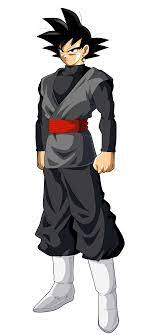
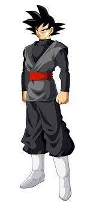

Zamas (ザマス, Zamasu), apodado y mejor conocido como Goku Black (ゴクウブラック, Gokū Burakku[12], Goku Oscuro[13]), referido regularmente simplemente como Black (ブラック, Burakku, Oscuro), es, bajo su identidad auténtica, el equivalente de Zamas de la línea de tiempo del presente inalterado, un antiguo Kaio del Norte y aprendiz de Kaio-shin del Universo 10, quien, tras asesinar a su mentor Gowas y convertirse en Kaio-shin, utilizó el anillo del tiempo para viajar al Año 780 y usar las Super Esferas del Dragón con el objetivo de intercambiar de cuerpos con Son Goku, asesinándolo a él junto a su esposa e hijo menor, tomando así su identidad y poder para efectuar el Plan Cero Humanos en colaboración con su versión del futuro alternativo y así conseguir aniquilar a los humanos en el omniverso. Presentándose ante la humanidad bajo el nombre e identidad robada de Son Goku, este fue apodado por Bulma del Futuro Alternativo con el sobrenombre de Goku Black, en referencia a su vestimenta oscura. Es el principal antagonista y villano del Arco de Trunks del "Futuro" del anime y manga de Dragon Ball Super, junto a otras versiones de sí mismo.